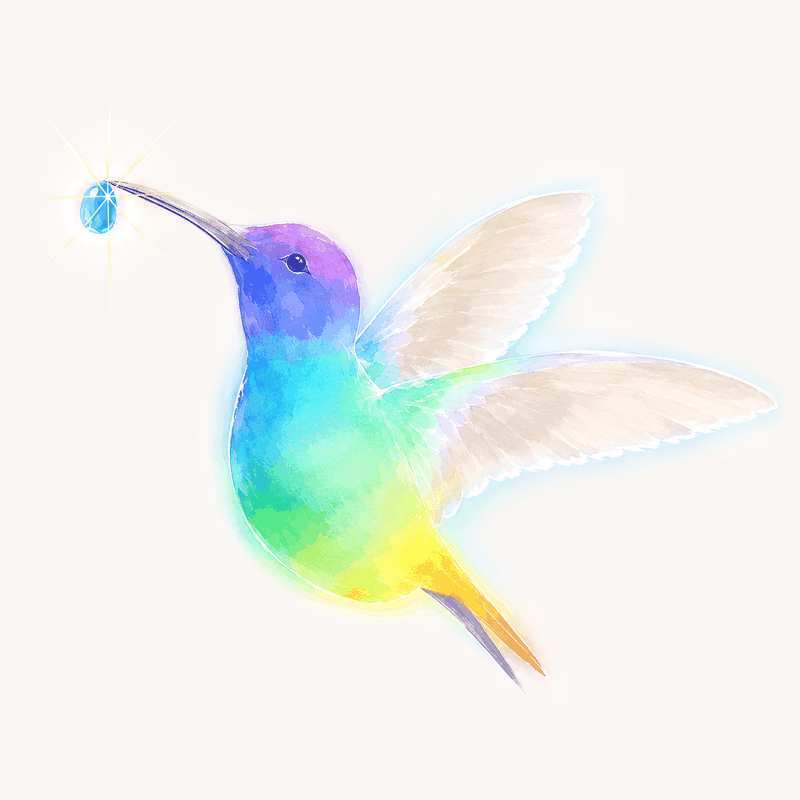

in-clinic midwifery
はちどりのお家（うち）
泉州地域に、自然なお産を残したい。
南大阪の助産師 4 人で運営する、院内助産チームです。

院内助産
はちどりのお家（うち）
泉州地域に、自然なお産を残したい。
南大阪のお産を守るため、地域の助産師 4 人がタッグを組みました。
安心と安全をモットーに、はぐくむ・産む・育てる。
女性・赤ちゃん・家族の力を最大限に引き出せるよう、寄り添いサポートします。
はちどりのお家の活動
笠松産婦人科内で、
産後ケア・自宅出産・妊婦健診、
女性とご家族の力を引き出す 4 つの活動を行っています。
院内助産・自宅出産
助産師が中心となり、自然なお産をサポート。ご家族の希望に寄り添いながら、安心と安全のもとで進めます。
妊婦健診・オープンシステム
笠松産婦人科とのオープンシステムを利用し、妊婦健診から出産・産後ケアまでをシームレスにサポートします。
ゆるっとお話し会
妊娠中の方、ご家族、地域の方々がゆるやかに集まる場。お産や子育ての不安、ちいさな疑問を、おしゃべりしながらほぐしていきます。
follow on instagram
最新の活動・お産の様子を発信中
院内助産・自宅出産・ゆるっとお話し会の開催情報は
Instagram で随時お知らせしています。